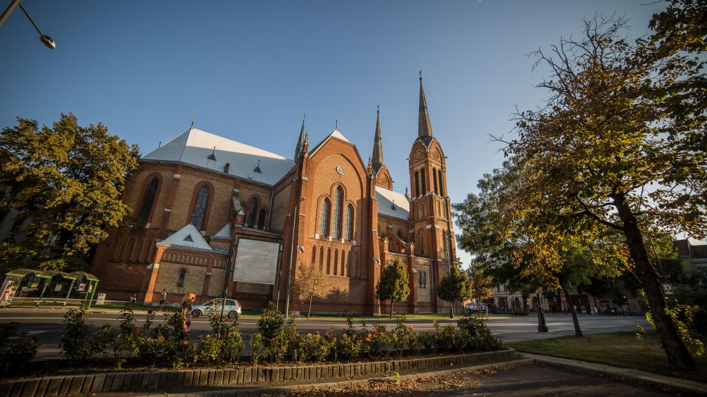
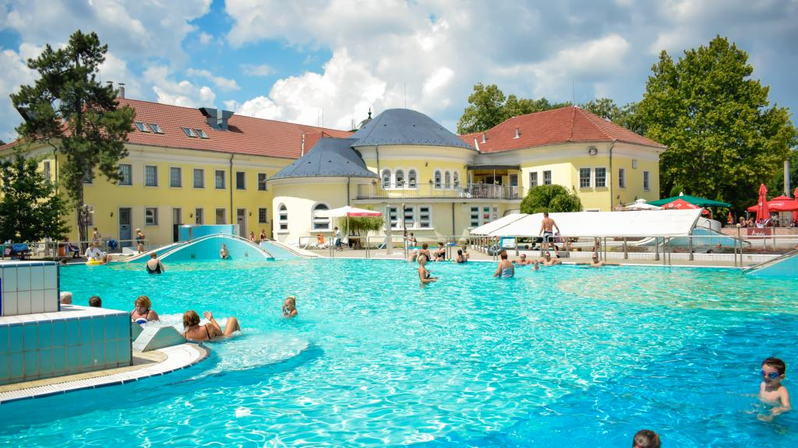
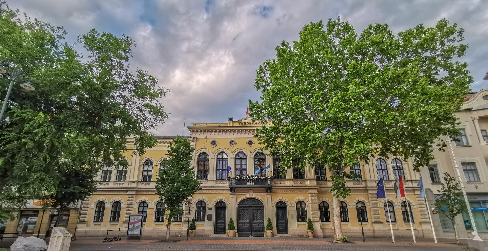
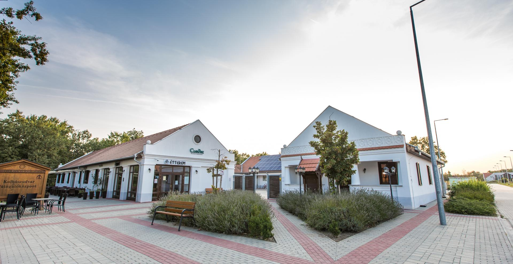

A békéscsabai Páduai Szent Antal-társszékesegyház (belvárosi katolikus templom) 2010 óta Szeged-Csanádi egyházmegye társszékesegyháza. A kéttornyú templom a város második legnagyobb temploma az evangélikus nagytemplom után. Neogótikus stílusban épült, 1910-ben szentelték föl. Tornyai 61 méter magasak.
Az Árpád Gyógy- és Strandfürdő egy békéscsabai termálfürdő, uszoda, élményfürdő és strandfürdő. A megyeszékhely egyetlen ilyen jellegű létesítménye, ami egész évben nyitva tart. A 2003-as felújítás óta 6 medencével rendelkezik, akadálymentesített, nagy zöld területek borítják. A strandon sokféle sport űzésére is lehetőség nyílik.
A békéscsabai Városháza 1871–1873 között épült, romantikus stílusban. Impozáns homlokzatával a belváros egyik legszebb épülete, a város szimbóluma. Ma is a város közigazgatási és közéleti központjaként működik.
A CsabaPark Békéscsabán egy szabadidős központ, amely a híres csabai kolbász hagyományait mutatja be és ápolja. A parkban étterem, tematikus “Óriások konyhája” játszóterek, múzeumi kiállítások és szabadidős eszközök is találhatók.
